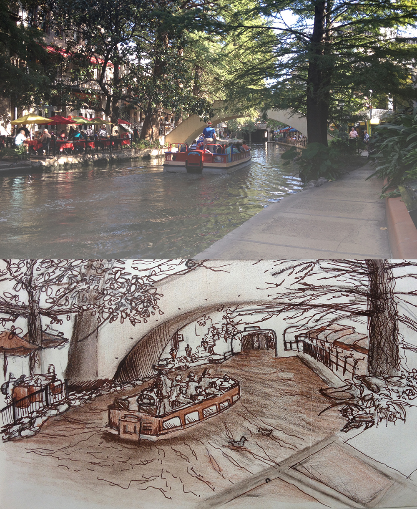
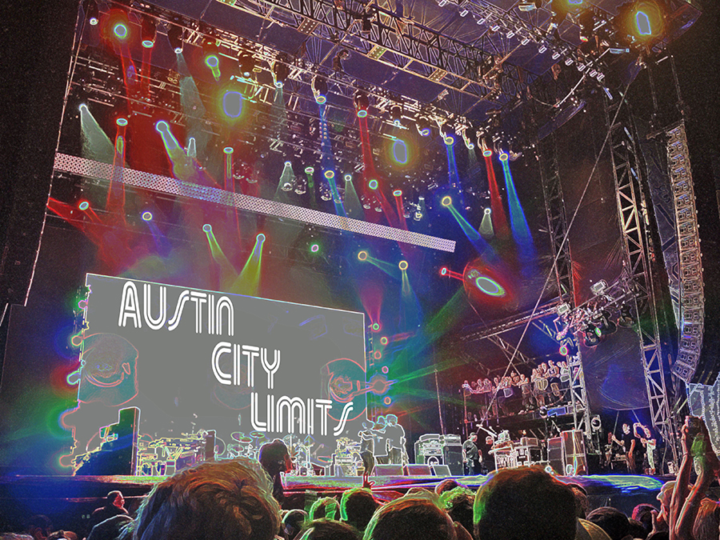

Field Study to Texas
Finding out what keeps Austin weird.
In the College of Architecture and Planning at Ball State, there is the time-honored tradition of field trip week, during which nearly every student in the college goes...somewhere. This particular trip took me and my colleagues to Austin, Texas. We spent the week scoping out feats of master craftsmanship, visiting local firms, gorging ourselves on barbeque, and enjoying everything the city had to offer.
We also spent one day in San Antonio, where we were fortunate enough to spend time on the Riverwalk and in the Alamo.


I personally enjoyed the details that I stumbled upon. A previously unnoticed water feature became a color scheme of earthy greens and purples. The ornamented eave under the roof at the University of Texas at Austin served as an eye-opener to perceive the entire campus design. Splinter Group is a slave to the details; a team of woodworkers, blacksmiths, and craftsmen that create intricate pieces of furniture and artwork.


As an exploration of Austin's musical inclination, or possibly just for my own benefit, I also had the opportunity to attend Austin City Limits. Though not a required portion of our architectural field study, the music fest was something I surely won't forget.
